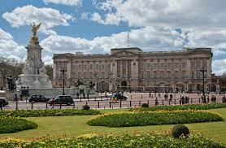
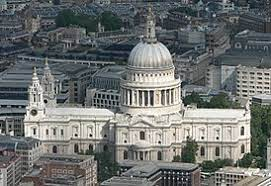
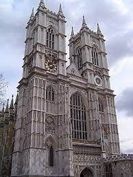

Лондон
Лондон — столиця Англії та Великої Британії, розташована на річці Темза. Одне з найбільших міст Європи. Площа 1572 км²; у 2017 році населення становило 8,8 млн осіб, а з передмістями близько 10 млн.
Середмістя Лондона є фінансовим і комерційним центром Сполученого Королівства Великої Британії та Північної Ірландії. Великий Лондон з 1965 складається з 32-х округів. Важливе джерело доходу — туризм. Найбільш відвідуваними місцями є: Лондонський Тауер, Собор Святого Павла, Букінгемський палац, Вестмінстерське абатство. Лондонський університет є найбільшим у країні. Фахові корпорації юристів Судові інни існують із XIII століття. Лондон — центр англійської театральної діяльності від часу побудови першого театру Джеймсом Бербеджем 1576 року.



Місто є найбільшим чи одним з двох найбільших (нарівні з Нью-Йорком) фінансових центрів і бізнес-хабів у світі. Також, за версією консалтингової компанії A.T.Kearney, Лондон є найвпливовішим містом у світі.
Неофіційні назви Лондона
Англійці часто називають Лондон The Big Smoke. Цю назву можна перекласти як «Великий дим». Зрозуміло, що ця назва пов'язана із лондонським смогом. Інша неофіційна назва міста — The Great Wen. Цей вираз майже неможливо перекласти дослівно, через те, що в українській мові немає тотожності слову Wen, що приблизно означає «Місто із занадто великим населенням».
Щодо назв районів, то Сіті інколи називають «квадратною милею». У часи Британської Імперії Лондон часто неофіційно називали столицею світу, а у 1960-і роки місто отримало назву «Свінгуючий Лондон» — за квітучим життям моди та культури.